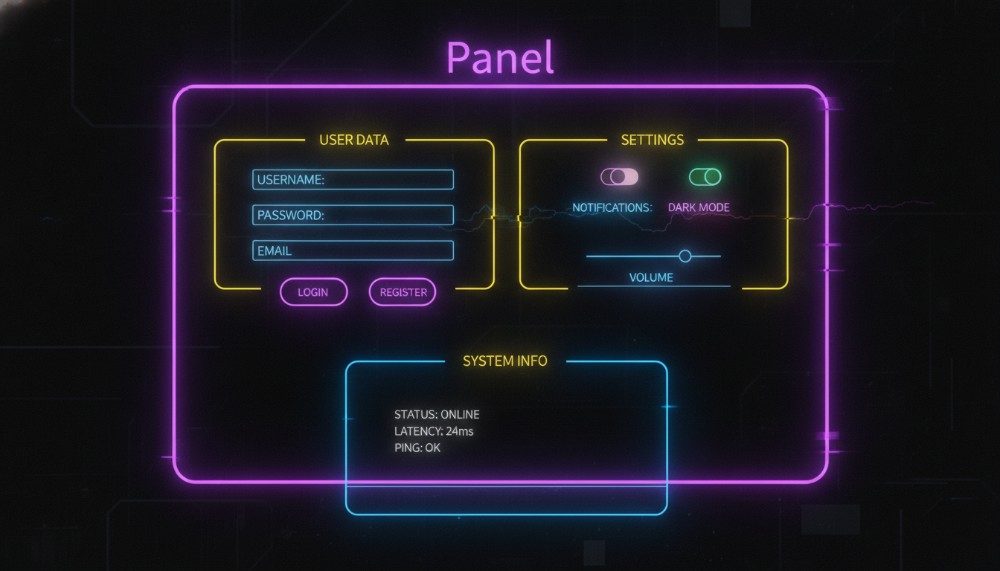

Контейнери, групування, рамки, AutoScroll

// Панель з прокруткою
Panel^ pnl = gcnew Panel();
pnl->Location = Point(20, 20);
pnl->Size = Size(400, 300);
pnl->BorderStyle = BorderStyle::FixedSingle;
pnl->AutoScroll = true;
pnl->BackColor = Color::FromArgb(40, 40, 60);
// Додавання контролів на панель
for (int i = 0; i < 20; i++) {
Button^ btn = gcnew Button();
btn->Text = "Кнопка " + i;
btn->Location = Point(10, i * 40);
btn->Size = Size(150, 30);
pnl->Controls->Add(btn);
}// Група з заголовком
GroupBox^ grp = gcnew GroupBox();
grp->Text = "Налаштування";
grp->Location = Point(20, 20);
grp->Size = Size(300, 200);
grp->ForeColor = Color::Cyan;
// RadioButton всередині GroupBox утворюють одну групу